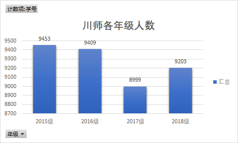
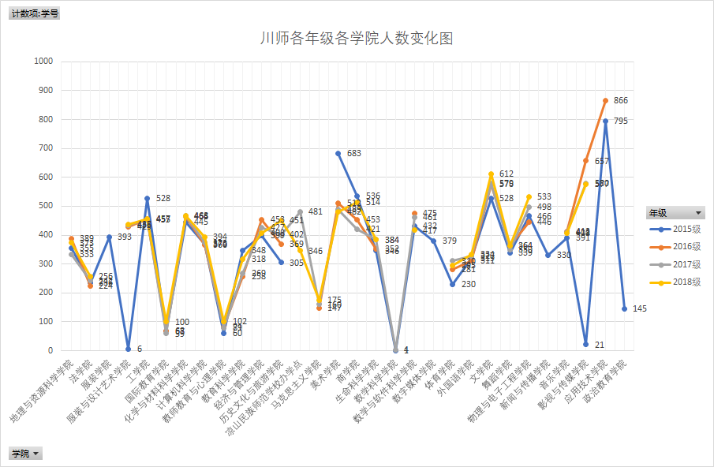
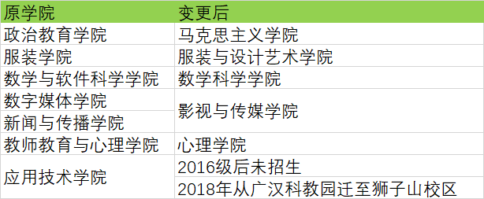
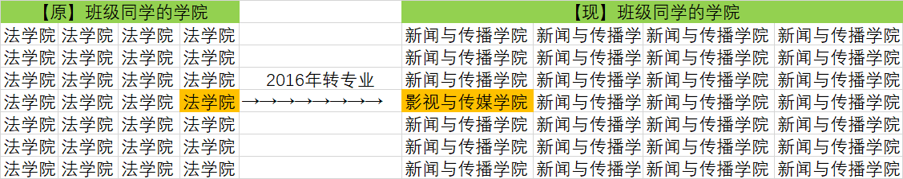
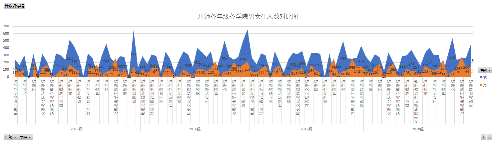
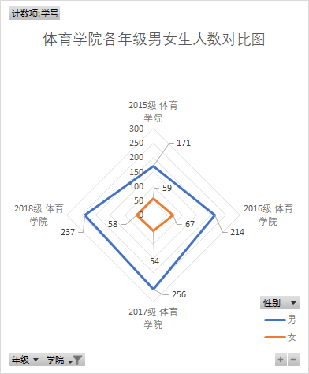
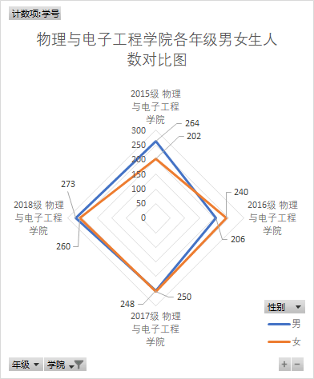
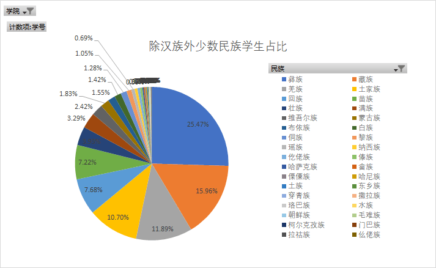

截至2019年4月，四川师范大学有狮子山、成龙、东校区3个校区，校园面积3400余亩；有全日制本科生37000余人。

川师自2015年至今，本科各年级学生人数基本稳定在9000人以上，唯独2017级学生人数较少，这是什么原因造成的？我们分析了一下各年级各学院人数变化：

图中4个有文字重叠或点重叠的即表示该学院2015级至2018级人数基本稳定，我们会发现有的学院只有1年的数据，有的学院某一年级的人数是个位数，这是数据出错了吗？其实不是，这里涉及到了一些学院更名、合并、停止招生、学生转专业、休学等情况。剔去学院更名、合并等因素影响，我们可以发现，2017级本科生人数骤减的原因主要是由于“应用技术学院”2016级之后停止招生了。

为什么有的学院只有1年的数据？2016年“数字媒体学院”与“新闻传播学院”合并为“影视与传媒学院”；2016年“服装学院”更名为“服装与设计艺术学院”等。这些变动造成了某一级后无数据的情况。经过调查分析，2015年至今的学院变更信息如上。

为什么有的学院某一年级的人数是个位数？举个例子：2015级原法学院某同学在大一学年结束后（2016年）转至网络与新媒体专业。而网络与新媒体专业所在学院2015年叫“新闻与传播学院”，2016年叫“影视与传媒学院”。该同学转至2015级网络与新媒体专业时（2016年），教务系统会更改该同学学院为现学院名“影视与传媒学院”，而教务系统不会更改原本2015级网络与新媒体学生的学院信息，他们的学院仍被标注为“新闻与传播学院”。

很多人对师范类院校的第一印象是女生多、男生少。的确，川师也不例外。但是通过统计分析，我们发现并不是所有的学院都是女生多。我们对比了川师各年级各学院男女生人数，得出“体育学院”和“物理与电子工程学院”男生人数均有超过女生。


进一步分析我们发现，“体育学院”2015-2018级男生人数远远超过女生；“物理与电子工程学院”仅2015级和2018级男生人数刚超过女生，2016级和2017级男生人数少于女生。
我们依据身份证归属地作为学生的生源地，通过分析我们发现，川师的生源地分布广泛，遍布全国29个省、自治区、直辖市。四川省本科生共28014人，占比75.6%。除了四川省本地的生源外，我们发现重庆的生源数量最多，数量达1136人。除此之外，我们发现川师不含北京、上海等地的本科生，可见川师对于一线发达城市学生的吸引力还不够强。

中国共有56个民族，川师本科生中共有34283名汉族学生，占比92.5%。除汉族外，川师共有来自彝族、藏族、羌族等34个少数民族的学生，剔除“凉山民族师范学校办学点”的干扰因素，我们发现彝族的学生仍然最多，占少数民族总人数的25.47%。
我们将复姓、少数民族姓氏处理为第一个字，便于统计分析，得出的词云显示，姓氏为"李","王","张","刘","陈","杨"的学生人数均超过1000人，占所有姓氏的68.5%。